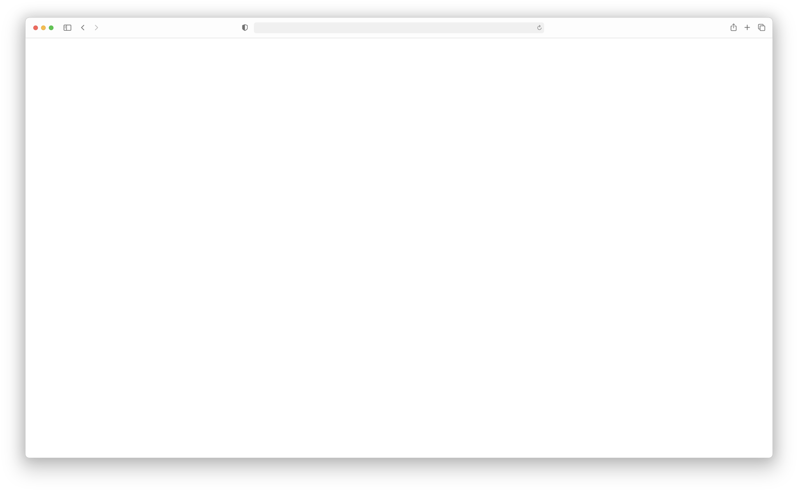
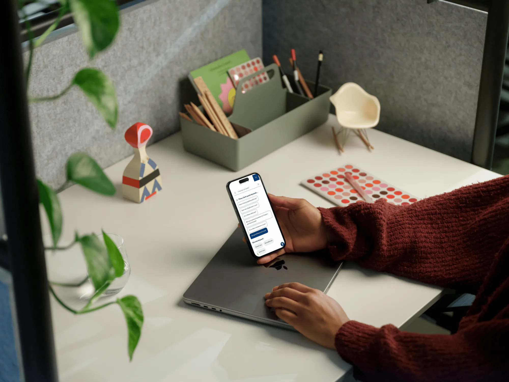
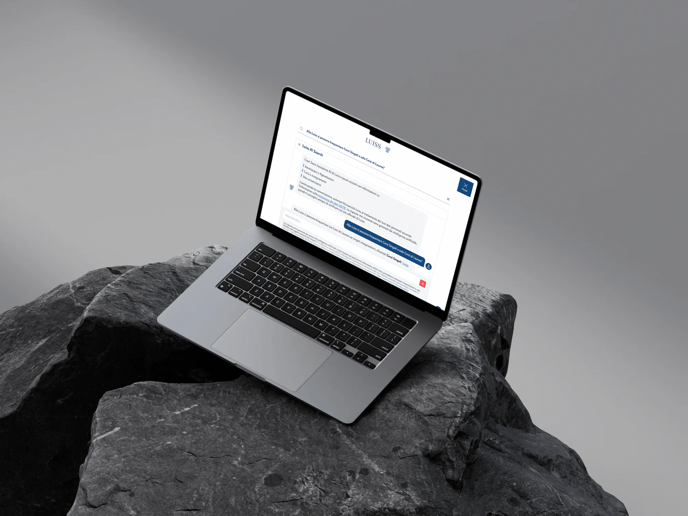
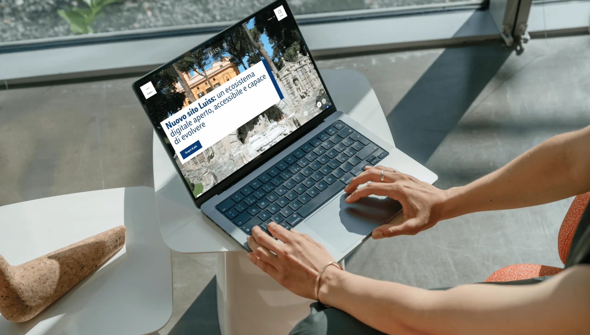

AI Search for Luiss
Rebuilding the Luiss public website and the AI search platform behind it: the site cut from 66,000 pages to what people actually read, Google custom search replaced with an engine the university owns and can tune, and a conversational assistant on top that answers with citations back to the source page.
Project
The old university website had crossed 66,000 pages. Very little of that was intentional. Fifteen years of departmental autonomy had produced duplicated Italian and English versions of the same page, orphaned drafts nobody could trace back to an owner, expired calls for applications still sitting at live URLs, and long tails of news posts attached to course pages. Roughly nine out of ten substantive answers, the ones about admission deadlines, fees, scholarship rules, lived inside attached PDFs rather than in HTML.
Search made the problem visible to every visitor. The site used a Google custom search integration, so results reflected whatever Google had crawled and however Google chose to rank it. A prospective student typing “master in management in English” got a four year old press release before the programme page. Nobody at the university could tune that, or even see why a result ranked where it did. The search box was the most used element on the site and the one part of it we did not control.
I worked on this as the internal owner on the Luiss side, covering the AI components, part of the development itself, the technical review of the search engine, and the compliance track that ran in parallel. Managing the suppliers was mine too. SparkFabrik built the design system, the Drupal platform and the infrastructure and supported UI/UX, Altura Labs ran the field research and the information architecture, and Pezzilli handled editorial work and go-live support. I scoped what each of them owned, reviewed what came back, and held all of it to a launch date that could not move. The goal was not a visual refresh. We had to shrink the content estate to what people actually read, replace Google with a search engine the university owns and can tune, and put a conversational assistant on top of it that answers in full sentences with citations back to the source page. All of it had to ship on one date, because a partial migration would have left two sites and two search behaviours running at once.
The content work came first, was the least glamorous part, and took the longest: fifteen months, more than 120 interviews run by Altura Labs, and over twenty offices pulled into the process. Every page was classified as keep, merge, archive, or redirect, with the offices that owned the content doing the classification rather than a central team guessing. Anything cut stayed retrievable rather than deleted, which mattered for the internal politics as much as for the link equity.
The other half of the rebuild was a design system rather than a site. The brand stopped being a PDF that every office interpreted its own way and became tokens and components wired into the code, one source of truth that dresses the corporate site now and is built to dress the ecosystem of department and research centre sites behind it without cloning anything. What gets approved in Figma is what ships, which retired the recurring argument about why the live page does not match the mockup.

The piece I expect to matter most internally is self provisioning. A department that wants its own site picks a master template from a dashboard and has one running in minutes, with the design system and the security baseline already in it. That used to be a project with a budget and a place in a queue. It is now an operation, and because every site inherits from the same template, a security update reaches all of them from one point instead of being chased across dozens of separate installations.
Translation works the same way, assisted rather than automated. An AI engine drafts the second language and a person approves before anything publishes. That was the only arrangement the editorial teams would have accepted, and the only one I would have signed.
On the platform side, a crawler indexes site content, FAQ pages, and orientation material, and the index feeds hybrid search that combines keyword matching with vector similarity, so a query phrased the way a seventeen year old phrases it still reaches a page written in institutional Italian. We started on Typesense as the vector store, chosen deliberately to avoid provider lock in, and moved to Firestore before launch when the operational picture changed. The generation layer sits behind an LLM proxy so the provider stays switchable, and today runs on Claude Sonnet on Vertex AI in europe-west1, with the RAG index and conversation history in europe-west8 in Milan, which kept the data residency conversation short.

The conversational layer is an agentic RAG loop rather than a single retrieval pass. The agent first decides whether a message needs retrieval at all, since “hello” does not. If the question retrieves poorly it rewrites the query and tries again, and after several failed cycles it falls back to the user’s original wording rather than inventing an answer. Session context carries forward, so “and for France?” after a question about double degrees resolves correctly. One behavioural rule cost more discussion than any of the infrastructure. When a question is generic and the retrieved context spans undergraduate, graduate, and PhD pages, the assistant must not silently pick one. It answers generally and links all of the relevant official pages, clearly separated.

Ranking took three levers to become usable: weighting by content type, removing the recency bias that kept surfacing news over evergreen pages, and indexing the URI itself, which turned out to carry a lot of signal in a taxonomy as structured as a university’s.
Underneath all of it, Drupal runs the content lifecycle on cloud native infrastructure, open source end to end. That was a deliberate choice about ownership rather than a technical preference: the university can run and move its own platform instead of renting a black box from whoever sold it. The modules SparkFabrik wrote for us went back to the Drupal community, which is a fair test of whether the work was any good. The content architecture is also structured for how people search now, which increasingly means a model answering on the university’s behalf. If it is going to answer anyway, it should answer from our pages.
Accessibility was designed into the components rather than audited onto them at the end: keyboard first, contrast checked, screen reader native, text resizable. The compliance track ran alongside and gated the launch. A vulnerability assessment by an external firm closed with no findings, static analysis output was required from the vendor, and the AI Act impact and risk assessment classified the module as limited risk with transparency obligations, which is what a search assistant over public content should be. Conversational data masking was not ready, so we went live explicitly without it, restricted access to session context and to records carrying explicit user feedback, and reduced retention as an interim measure rather than pretending the control existed.

The new site went live on 23 June 2026 with the search engine and the assistant integrated natively. Content dropped from more than 66,000 pages to around 23,000. Search is now ours, tunable in a working day rather than through a black box.
Two reporting periods in, July and August, the platform has handled more than 25,000 interactions and over 5,000 AI chat sessions. August is the number I did not expect: 14,152 interactions against 11,566 in July, a 22.4% rise, in the month the university empties out. Of those, 5,485 were searches and 1,938 were AI chats. After a round of fixes drawn from the first month of feedback, the model completed 98.0% of requests successfully, at an average inference cost of around eleven dollars a day.
78% of assistant conversations end after the first answer, and 80.1% of the feedback people left is positive. Together those two numbers say the same thing: most visitors get a usable answer and leave. It also confirms the assistant is being used as a search engine that replies in sentences rather than as something to hold a conversation with, which is worth knowing before anyone invests in longer dialogue.
The result that matters most sits outside the platform. Over the two months, calls to the call centre fell 12% and emails to the offices that field student questions first, admissions, the registry, Erasmus, housing, fell 7%. I would not yet call that causation, since the same two months are the quietest of the academic year, but it is the first evidence that answering a question on the website removes work from the people who used to answer it by hand.
The change that will outlast the technology is governance. Every office is now accountable for its own pages, publication is centralised through one editorial team, and technical reports route through a ticketing queue instead of arriving as direct emails to whoever was in the last meeting.